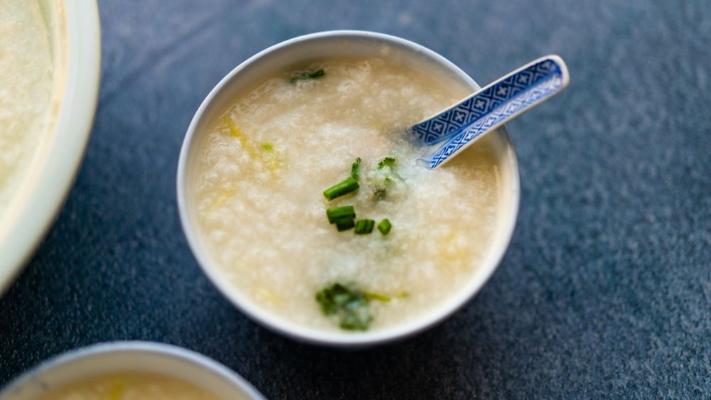

Congee has been around for such a long time, and is a staple dish in a number of Asian countries. Congee isn't easy to get often where I'm at, so I've done it
a lot of times solo. However, I've never personally been able to get the thick consistency as right as I've had. Then I stumbled upon this recipe, also thanks to youtube
channel by the name of Made with Lau.
(Side note: This is absolutely the physical website not the video sorry)
I appreciate what I've learned thanks to the internet, and thanks to countless individuals who love sharing pieces of home with others.
Chef Daddy Lau's Congee
Main Ingredients
- 1 rice cup white rice (a "rice cup" is about 3/4 of a standard US cup.
Jasmine rice is preferred but any white rice will work!)
- 12 oz chicken (use any amount you want)
- 8 cups Water
- .50 oz Ginger
- 2 stalks of Green Onion
- Cilantro (to taste)
Chicken Marinade
- 2 tsp Cornstarch
- 1 tbsp Oyster Sauce
- 2 tbsp Water
- .50 oz Chicken Boullion
- 2 tbsp Vegetable Oil
Additional Flavor
- 1 tsp Salt
- 1 tsp Chicken Boullion
Let's get to makin'
- We'll start by washing our rice (1 rice cup) in a bowl:
Fill the bowl with some water
Massage and mix the rice around with your hands
Drain the water
My dad prefers to repeat this 3 times, for good measure
- To save some time, we'll start boiling some water (8 cups) for later. For jook / congee recipes, the water-to-rice ratio is usually very high. In my dad's recipe, it's 8-to-1.
Then, we'll chop our ginger (0.50 oz) into thin slices, and then into thin strips. Chop a few strands of cilantro () and green onion (2 pieces) into small pieces.
- Cut the chicken (12 oz) into thin slices and place it in a bowl to marinate.
Add oyster sauce (1 tbsp), cornstarch (2 tsp), chicken bouillon (0.50 tsp), and water (2 tbsp). Mix and massage the chicken and the marinade together for 30 seconds until there's no liquid left. Then, add vegetable oil (2 tbsp) to the bowl and mix it around with chopsticks for another 20-30 seconds.
The cornstarch helps glue the flavors to the chicken, and helps lock the juices inside the chicken. The oil helps prevent the chicken from clumping together, and also helps seal the juices inside the chicken as well.
Pro-tip: Before cutting, place a towel underneath your board to increase its stability, and decrease the chances that you'll accidentally cut yourself.
- Pour the boiled water (8 cups) from earlier into a pot, set on high heat, and wait for the pot to boil before adding our rice. It's important not to add the rice before the pot starts boiling.
Once the pot (water only) is boiling, add the rice and stir it around a bit. Another important tip - don't stir the rice once the pot is boiling yet again, otherwise it will be more likely to stick to the bottom of the pot.
We'll cover the pot (water and rice) and wait until it's boiling again.
- Once the pot is boiling again, we'll partially cover the pot and let it cook at medium heat for 25 minutes.
Depending on what "medium heat" is for your stove, you might need to cook it at medium heat for longer.
Even though this step is fairly passive, it's an important one. My dad explains that Cantonese people are very proud and particular about the quality of their "jūk dái", or the soup base.
- Once we've hit 25 minutes, we can either proceed with this step or cook it for longer.
When my wife and I recreated this recipe using my dad's instructions, I had to cook it for another 10 minutes longer because my "medium heat" wasn't hot enough. Our grains of rice were still fairly solid. It really depends on your stove, and a bit of trial and error.
Anyway, if you're happy with where your rice is at, start whisking the pot rapidly and constantly for 2-3 minutes. This helps speed up our cooking time, and helps break down the rice into smaller, fluffier pieces.
If you don't have a whisk, you'll need to cook for another 10-20 minutes.
- Set the stove to high heat, and slowly add the chicken over the course of 30 to 60 seconds, stirring constantly as you go. If you add it all at once, it will clump up.
Stir the chicken around for another 1-2 minutes. Once the pot is boiling again, it should be ready. We can also judge by looking at the chicken to make sure there are no raw spots left.
- Almost there! Add the strips of ginger, as well as salt (1 tsp) and chicken bouillon (1 tsp). Stir everything around for 20-30 seconds.
- Turn off the heat, and pour the jook into your favorite bowl. Garnish with the green onions and cilantro.
Call your loved ones over - it's time to eat!